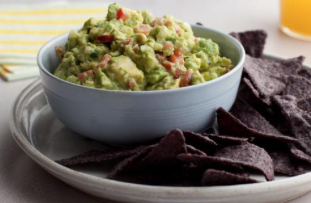

Guacamole

Introduction
This excellent guacamole recipe was created by Alton Brown. It's one of my favorites!
Ingredients
- 3 Haas avocados, halved, seeded and peeled
- 1 lime, juiced
- 1/2 teaspoon kosher salt
- 1/2 teaspoon ground cumin
- 1/2 teaspoon cayenne
- 1/2 medium onion, diced
- 1/2 jalapeno pepper, seeded and minced
- 2 Roma tomatoes, seeded and diced
- 1 tablespoon cilantro, chopped
- 1 clove garlic, minced
Directions
- In a large bowl place the scooped avocado pulp and lime juice, toss to coat.
- Drain, and reserve the lime juice, after all of the avocados have been coated.
- Using a potato masher add the salt, cumin, and cayenne and mash.
- Then, fold in the onions, tomatoes, cilantro, and garlic.
- Add 1 tablespoon of the reserved lime juice.
- Let sit at room temperature for 1 hour and then serve.
Recipe courtesy of Alton Brown, original available here.